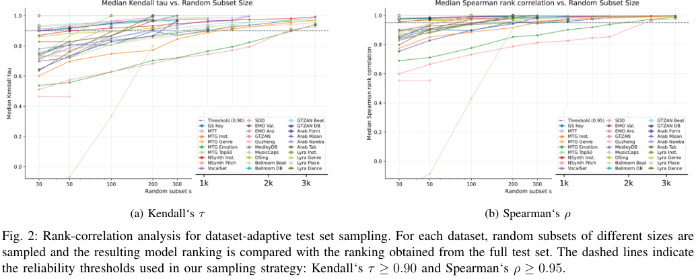
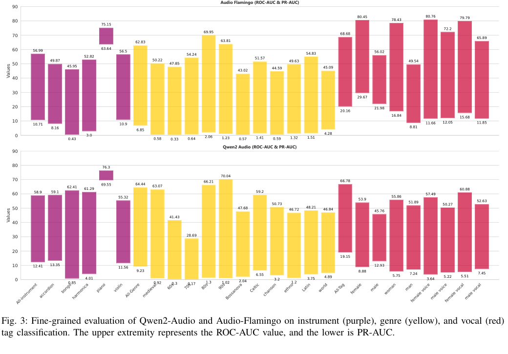
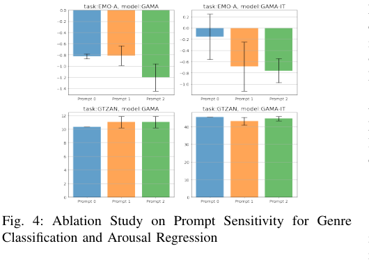

Clip-level Understanding
Key detection, genre classification, emotion tagging, instrument recognition, pitch estimation, and continuous arousal/valence regression.
Evidence from a Comprehensive MIR Benchmark
A comprehensive instruction-following benchmark for evaluating audio-text LLMs on real music information retrieval tasks, spanning 17 task types and 29 datasets with task-specific MIR evaluation metrics.
Recent audio-text large language models can follow natural language prompts, describe music, and answer music-related questions. However, many existing evaluations remain narrow: they focus on a small set of music tasks, convert answers into multiple-choice formats, or use ad-hoc text metrics that do not match established Music Information Retrieval (MIR) practice.
This paper asks a more direct question: can audio LLMs solve the kinds of MIR problems that music researchers have studied for decades? CMI-Bench answers this by turning traditional MIR annotations into instruction-following prompts while keeping the original task-specific metrics. As a result, audio LLMs can be compared not only with each other, but also against specialized supervised MIR systems.
The benchmark is designed around the observation that music understanding is not a single ability. A model may describe a song fluently while still failing to estimate pitch, align beats, transcribe lyrics, identify culturally specific forms, or produce a valid list of timestamped events. CMI-Bench therefore separates high-level semantic tasks from fine-grained, continuous, and sequential MIR tasks.
CMI-Bench reformulates established MIR annotations into natural-language instruction-response pairs while preserving task-specific evaluation protocols.
Start from widely used MIR datasets covering tags, pitch, key, rhythm, captions, lyrics, emotion, and culturally specific taxonomies.
Represent each task as an audio-conditioned natural language instruction with examples or formatting constraints when needed.
Normalize free-form model responses into labels, scores, timestamps, tuples, segments, or text strings.
Evaluate with standard MIR/NLP metrics such as ROC-AUC, PR-AUC, R2, F-measure, melody accuracy, WER, and BERTScore.
Key detection, genre classification, emotion tagging, instrument recognition, pitch estimation, and continuous arousal/valence regression.
Music captioning and lyrics transcription are evaluated with text generation metrics such as BLEU, METEOR, ROUGE, BERTScore, WER, and CER.
Melody extraction, beat tracking, downbeat tracking, structure segmentation, and playing-technique detection test time-aligned musical reasoning.
Lyra and Arab-Andalusian tasks probe cultural and regional music understanding beyond common Western pop-centered evaluation settings.
Each example pairs an audio input placeholder with a task-specific prompt. Prompts may include allowed labels, numeric ranges, examples, or required output structures such as timestamp lists and segment intervals.
Since LLM responses are free-form, outputs are normalized before scoring: labels are cleaned, numbers are constrained, invalid tuples are filtered, timestamps are sorted, and missing predictions are handled consistently.
The benchmark combines classic MIR datasets with newer music-language and world-music tasks, producing a testbed that stresses both common acoustic recognition and less represented musical concepts.
Rather than converting music understanding into multiple-choice questions, CMI-Bench asks models to produce open-ended answers and post-processes those answers into formats compatible with established MIR metrics and toolkits.
Multi-class tasks are evaluated with strict normalized label matching. Multi-label
tagging tasks use semantic matching with a retrieval encoder for large tag spaces,
while Lyra labels are parsed directly into explicit label sets. Key detection uses
weighted key scores from mir_eval; emotion regression constrains and
normalizes 1-to-9 scalar outputs before computing R2; captioning uses BLEU, METEOR,
ROUGE, and BERTScore.
Sequential tasks require additional output control. Lyrics are scored with WER and CER. Beat and downbeat predictions are parsed as time points and evaluated with a 20 ms F-measure tolerance. Melody extraction uses frame-level pitch accuracy, and song structure segmentation parses interval lists into section boundaries for segmentation metrics.
For proprietary models, the paper further introduces a dataset-adaptive sampling strategy. Subset sizes are selected by measuring rank-correlation agreement with full-test model rankings, allowing API-based systems to be evaluated efficiently while preserving reliable comparisons.
This sampling protocol is important because the full benchmark contains more than 61,000 examples and many audio clips. The sampled proprietary evaluation keeps 11,289 examples, or 18.3% of the full set, while targeting Kendall's τ ≥ 0.90 and Spearman's ρ ≥ 0.95 against full-set rankings. In other words, the paper tries to reduce cost without changing the conclusions about relative model order.
The evaluation covers 23 systems, including open-source audio-text LLMs, omni-modal models, reasoning-oriented audio models, and proprietary systems. The suite spans small systems such as Pengi, 7B-scale music/audio models such as LTU, GAMA, Audio-Flamingo, MusiLingo, and Music Flamingo, larger systems such as SALMONN and Baichuan-Omni, and newer omni models including Qwen2.5-Omni, Qwen3-Omni, GPT Audio, Gemini 3.1 Pro, and Gemini 3.5 Flash.
Table IV summarizes whether each model is reported to cover general sound, music, and speech. This distinction matters because strong general audio or speech capability does not automatically imply strong music reasoning, especially for fine-grained and temporally structured MIR tasks.
The comparison also separates music-specialized models from broad audio models and newer omni-modal systems. This makes it possible to ask whether scale, speech support, music-focused training, or proprietary model quality leads to more robust MIR behavior. The answer is mixed: some new systems improve selected tasks, but no model is consistently strong across the whole benchmark.



The results show that current audio LLMs are promising on some semantic music tasks, but they are not yet reliable replacements for specialized MIR systems.
Specialized MIR baselines still lead. Most evaluated audio LLMs remain behind task-specific supervised systems on standard MIR metrics, especially for note pitch, melody extraction, beat/downbeat tracking, and fine-grained classification.
Semantic tasks are the relative bright spot. Some models are competitive on music captioning and GTZAN genre classification, showing that high-level music semantics are closer to current model strengths.
Training-set alignment matters. Peak performance often appears on datasets or task families that are likely close to a model's training distribution, revealing limited generalization to unseen MIR settings.
Lyrics transcription is surprisingly weak. Even models with speech-capable encoders struggle on DSing, suggesting that ASR capability alone is not enough for lyric-specific transcription.
Prompt format can change performance. The ablation in Fig. 4 shows that models can be sensitive to task wording and output constraints, especially for regression and classification tasks.
Sequential MIR remains a bottleneck. Dense timestamped outputs, interval boundaries, and tuple formats are brittle for current instruction-following audio models.
Overall, CMI-Bench suggests that current audio-text LLMs have learned useful high-level associations between music and language, but still lack the precision, calibration, and output discipline required by MIR. The gap is especially visible when answers must be numeric, frame-level, time-aligned, or constrained to culturally specific labels.
The paper argues that future music foundation models will need stronger MIR-specific post-training, better output-format control, broader music coverage, and evaluation setups that preserve the structure of real MIR tasks instead of flattening them into generic question answering.
| Task | Dataset | Metrics | #Test Samples |
|---|---|---|---|
| Key Detection | GS | G-Mean Score | 2406 |
| Emotion Regression | EMO | R2 | 125 |
| Music Tagging | MagnaTagATune / MTG-Top50 | ROC-AUC, PR-AUC | 5329 / 11356 |
| Instrument Classification | MTG-Instrument / NSynth-Instrument | ROC-AUC, PR-AUC / Accuracy | 5115 / 4096 |
| Genre Classification | MTG-Genre / GTZAN | ROC-AUC, PR-AUC / Accuracy | 11479 / 290 |
| Emotion Tagging | MTG-Emotion | ROC-AUC, PR-AUC | 4231 |
| Pitch Estimation | NSynth-Pitch | Accuracy | 4096 |
| Singing Technique Classification | VocalSet | Accuracy | 1140 |
| Music Captioning | SDD / MusicCaps | BLEU, METEOR, ROUGE, BERTScore | 1106 / 2813 |
| Lyrics Transcription | DSing | WER, CER | 482 |
| Beat / Downbeat Tracking | GTZAN-Rhythm / Ballroom | F-Measure | 290 / 685 |
| Melody Extraction | MedleyDB v2 | Melody Accuracy | 618 |
| Performance Technique Classification | Guzheng-99 | Micro-F1, Macro-F1 | 94 |
| Structure Analysis | SongFormBench | Accuracy, HR.5F, HR3F | 300 |
| Greek Folk Music Understanding | Lyra-Instrument / Genre / Place / Dance | Micro-F1, Macro-F1, Exact Match / Accuracy | 270 each |
| Arab-Andalusian Music Understanding | Arab-Andalusian Nawba / Tab / Form / Mizan | Accuracy | 847 each |
| Dataset / Task | Full Size | Sample Size | Preserve |
|---|---|---|---|
| GiantSteps Key | 2406 | 500 | 20.8% |
| MTT | 5329 | 300 | 5.6% |
| MTG-Instrument | 5115 | 750 | 14.7% |
| MTG-Genre | 11479 | 750 | 6.5% |
| MTG-Emotion | 4231 | 2500 | 59.1% |
| MTG-Top50 | 11356 | 500 | 4.4% |
| NSynth-Instrument | 4096 | 100 | 2.4% |
| NSynth-Pitch | 4096 | 2000 | 48.8% |
| SDD | 1106 | 100 | 9.0% |
| MedleyDB | 618 | 500 | 80.9% |
| MusicCaps | 2813 | 100 | 3.6% |
| SongFormBench | 300 | 300 | 100.0% |
| Lyra-Instrument / Dance | 270 | 200 | 74.1% |
| Lyra-Genre | 270 | 100 | 37.0% |
| Lyra-Place | 270 | 270 | 100.0% |
| Arab-Andalusian tasks | 847 | 200-300 | 23.6%-35.4% |
| Total | 61619 | 11289 | 18.3% |
| Model | #Params | Sound | Music | Speech |
|---|---|---|---|---|
| Pengi | 323M | ✓ | ✓ | ✗ |
| Audio Flamingo | 2.2B | ✓ | ✓ | ✗ |
| LTU / LTU-AS | 7B | ✓ | ✓ | ✗ / ✓ |
| MusiLingo-long / MuLLaMA | 7B | ✗ | ✓ | ✗ |
| GAMA / GAMA-IT | 7B | ✓ | ✓ | ✗ |
| SALMONN | 13B | ✓ | ✓ | ✓ |
| Qwen-Audio-Chat | 8.4B | ✓ | ✗ | ✓ |
| Qwen2-Audio-Instruct | 8.4B | ✓ | ✓ | ✓ |
| Audio Flamingo 2 / 3 | 7B | ✓ | ✓ | ✓ |
| Audio-Reasoner / Music Flamingo | 7B | ✓ / ✗ | ✓ | ✓ / ✗ |
| Baichuan-Omni | 11B | ✓ | ✓ | ✓ |
| Qwen2.5-Omni | 7B | ✓ | ✓ | ✓ |
| Qwen3-Omni | 30B-A3B | ✓ | ✓ | ✓ |
| GPT Audio / Gemini 3.1 Pro / Gemini 3.5 Flash | Undisclosed | ✓ | ✓ | ✓ |
Best completed scores are highlighted. Asterisks mark proprietary-model scores computed on sampled subsets.
| Task | Metric | Qw2.5 | Qw3 | AF3 | MF | MOSS | AST | GPT-A | Gem. Pro | Gem. Flash | SOTA |
|---|---|---|---|---|---|---|---|---|---|---|---|
| GS-K | GES ↑ | 49.91 | 63.56 | 20.00 | 40.06 | 10.52 | 22.12 | 0.70* | 24.60* | 14.98* | 74.3 |
| EMO | aR2 ↑ | 0.33 | 0.43 | -0.31 | -0.05 | 0.43 | -0.18 | 0.08* | 0.52* | 0.54* | 0.62 |
| EMO | vR2 ↑ | -0.31 | 0.43 | -0.65 | 0.03 | 0.10 | -0.71 | 0.06* | 0.34 | 0.31 | 0.76 |
| MTT | ROC ↑ | 67.72 | 78.72 | 82.10 | 81.59 | 77.08 | 75.78 | 52.10* | 55.45* | 54.31* | 92.0 |
| MTT | PR ↑ | 17.50 | 27.75 | 34.53 | 32.91 | 25.65 | 23.70 | 9.71* | 13.32* | 11.01* | 41.4 |
| GTZ. | Acc. ↑ | 78.62 | 92.76 | 89.66 | 71.72 | 75.86 | 66.21 | 47.00* | 88.00* | 78.00* | 83.9 |
| NI | Acc. ↑ | 18.41 | 15.23 | 44.60 | 75.17 | 5.18 | 3.66 | 0.00* | 20.00* | 17.00* | 78.2 |
| NP | Acc. ↑ | 3.27 | 2.83 | 18.58 | 39.75 | 0.15 | 0.00 | 0.90* | 10.75* | 11.25* | 89.2 |
| SDD | BLEU ↑ | 20.24 | 11.37 | 16.94 | 16.07 | 7.50 | 3.87 | 7.19* | 19.09* | 15.29* | - |
| MC | BLEU ↑ | 4.93 | 13.69 | 27.98 | 31.56 | 21.67 | 8.49 | 6.21* | 3.19* | 8.14* | 21.7 |
| DS | WER ↓ | 82.24 | 13.85 | 21.29 | 100.34 | 121.24 | 5349.59 | 163.34* | 51.10* | 334.72* | 12.99 |
| G-B | FM ↑ | 15.79 | 25.98 | 28.73 | 24.16 | 27.48 | 21.93 | 0.00* | 30.32* | 25.93* | 88.3 |
| MDB | Acc. ↑ | 1.83 | 3.48 | 1.80 | 2.76 | 7.18 | 1.96 | 0.00* | 1.16* | 0.71* | 72.3 |
| SFB | B-F1@3.0 ↑ | 28.61 | 47.35 | 9.21 | 26.17 | 55.10 | 23.66 | 26.78* | 69.63* | 55.89* | 78.4 |
| Lyra | Genre miF1 ↑ | 6.41 | 7.93 | 0.71 | 46.86 | 15.44 | 17.22 | 39.86* | 58.71* | 52.33* | 87.2 |
| Arab | Mizan Acc. ↑ | 20.53 | 9.88 | 7.00 | 5.31 | 13.63 | 27.86 | 9.62* | 45.95* | 48.65* | - |
@misc{ma2025audioLLMsUnderstandMusic,
title={Can Audio LLMs Understand Music? Evidence from a Comprehensive MIR Benchmark},
author={Yinghao Ma and Weixiong Chen and Siyou Li and Juntao Yu and Emmanouil Benetos and Akira Maezawa},
year={2025},
eprint={2506.12285},
archivePrefix={arXiv},
primaryClass={eess.AS}
}